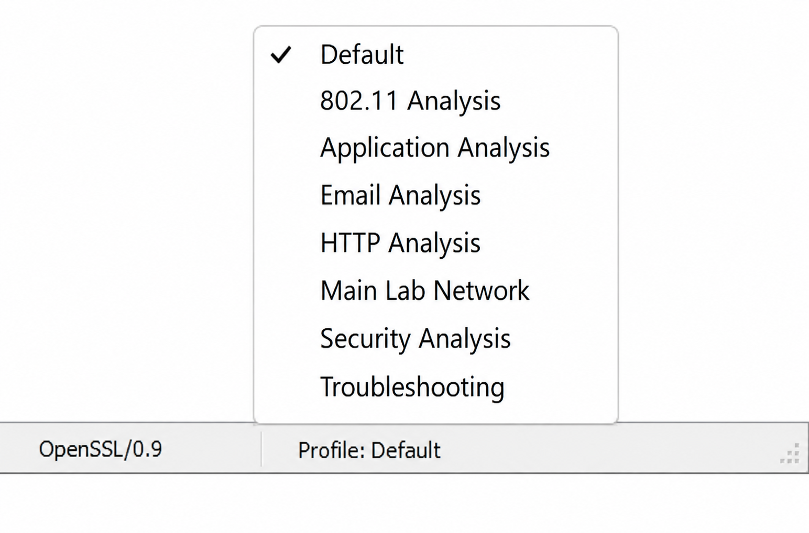
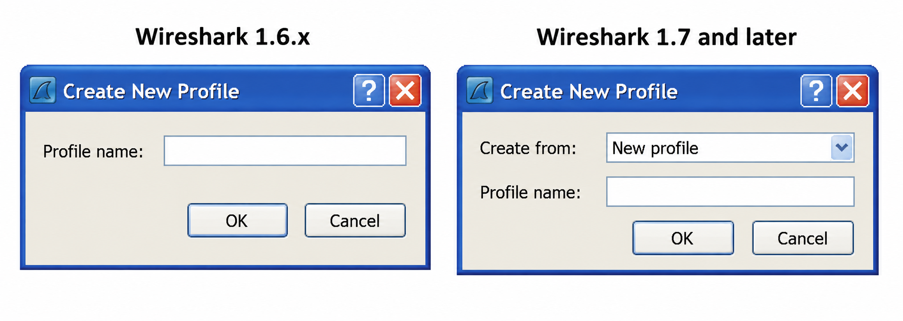
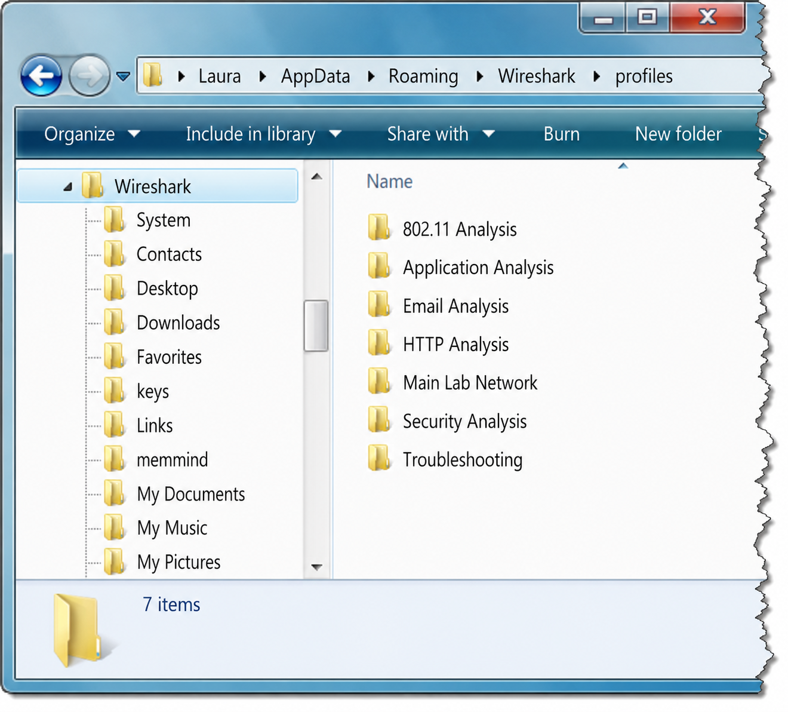

A profile stores its own cfilters, dfilters, colorfilters, preferences, and columns. When you switch profiles, Wireshark immediately applies all those settings. How does this differ from just editing your default configuration?
Creating a profile based on a "Master profile" (available since Wireshark 1.8) is described as a "great addition." What problem does it solve, and what settings should a Master profile contain?
Customize Wireshark with Profiles
Profiles can be used to work more efficiently with display filters, capture filters, coloring rules, columns and layouts specifically configured for the environment in which you are working. For example, if you work on a network segment at a branch office with routing, web browsing, VoIP and DNS traffic, you might create a profile called "Branch 01" with coloring rules, a TCP Window Size column, and an IP DSCP column.

The current profile is listed in the right column of the Wireshark Status Bar. When you create a new profile, Wireshark builds a directory with the same name. The Default profile uses configuration files directly inside the Personal Configuration directory. When you shut down Wireshark or change to another profile, the profile in use is saved and automatically loaded again when you restart Wireshark.
Create a New Profile
Right-click the Profile area in the Status Bar or select Edit | Configuration Profiles | New to create a new profile. Wireshark creates a new directory using the profile name you specify, placed in a \profiles directory under your Personal Configurations directory. You can also rename, copy or delete profiles in this area.

Profile Files and Sharing
Files inside a profile directory (as shown in Figure 165) may include: cfilters, dfilters, colorfilters, preferences, disabled_protos, decode_as_entries, recent. New profiles start with global configuration defaults; as you alter settings, new profile configuration files are placed in the profile's directory.

To share a profile, copy the entire profile directory to the other Wireshark system's profiles directory. Be careful sharing the preferences file — it contains settings specific to the original system such as the default file open directory and default capture device that may not match the target system.
A Troubleshooting profile adds tcp.window_size and tcp.time_delta columns plus coloring rules for T-SmallWin and T-TCP Delay. Why are these specific metrics important for troubleshooting, and what do the I- and T- prefixes signify in the colorfilters naming convention?
A Security profile contains coloring rules for traffic flowing "between clients" (excluding server IPs from source/destination) and filters for unusual ICMP. Why is client-to-client traffic suspicious on a corporate network?
Profile Types
Troubleshooting Profile
A general troubleshooting profile contains these customized configurations:
cfilters: Capture filters for local MAC address and key ports.
My MAC: ether host D4:85:64:A7:BF:A3 Not My MAC: not ether host D4:85:64:A7:BF:A3 DHCP: port 67 Inbound SYNs: tcp[tcpflags] & (tcp-syn) != 0 and tcp[tcpflags] & (tcp-ack) = 0
dfilters: Display filters for key traffic types and coloring rule triggers.
TCP Issues: tcp.analysis.flags SYN Packets: tcp.flags==0x0002 HTTP GETs: http.request.method=="GET" Info Packets: frame.coloring_rule.name matches "^I-" Trouble Packets: frame.coloring_rule.name matches "^T-"
colorfilters: (I = Green, T = Orange/Red)
I-WinUpdates/G: expert.message=="Window update" I-TCP SYN/R: tcp.flags.syn==1 T-HTTP-err/O: http.response.code > 399 T-DNS-err/O: !dns.flags.rcode==0 && dns.flags.response==1 T-TCP Delay/O: tcp.time_delta > 2 T-SmallWin/O: tcp.window_size < 1320 && tcp.window_size > 0
preferences: Enable Calculate conversation timestamps (TCP), disable IP checksum validation, set Time column to Seconds Since Previous Displayed Packet, add columns for tcp.window_size, tcp.seq, tcp.nxtseq, tcp.ack, tcp.time_delta.
Corporate Profile
A corporate profile captures/filters on key host MAC or static IP addresses, key protocols and ports, and key web server host names. All display filters should also be defined as coloring rules for easy identification in trace files. Columns include Time Since Previous Displayed Packet and TCP window size.
WLAN Profile
Adds WLAN-specific display filters: wlan, wlan.fc.type_subtype==0x08 (beacons), wlan_mgt.ssid=="Corp WLAN1", wlan.fc.retry==1 (retries). Colorizes disassociation frames (wlan.fc.type_subtype==0x0a), retries, and weak signal (radiotap.dbm_antsignal < -80). Adds columns for WLAN channel, signal strength (radiotap.dbm_antsignal), IEEE 802.11 RSSI and TX rate.
VoIP Profile
Filters for SIP (sip), RTP (rtp), SIP error responses (sip.Status-Code==401). Colorizes SIP error responses and retransmissions (sip.resend==1). Enables "Try to Decode RTP outside of conversations" in RTP preferences. Adds DSCP column (ip.dsfield.dscp).
Security Profile
Focuses on unusual traffic patterns. Display filters and coloring rules for IRC traffic (tcp matches "(?i)join"), unusual ICMP types, ICMP OS fingerprinting. Adds columns for http.host and tcp.stream.
Case Study
A customer had thousands of hosts and literally hundreds of applications. Capturing traffic from a client inevitably yielded a huge amount of traffic to sort through. By creating a new profile for each of the three offices visited, analysis could proceed much faster. The client was primarily interested in slow performance between clients and one database server in particular — "DB912."
The custom profile for this client included:
- Coloring rule for large delays from DB912 (
ip.src==10.6.2.2 && tcp.time_delta > 0.200) — red background, white foreground - Coloring rule for small TCP Window Size field values (Windows XP hosts without Window Scaling) — red background, white foreground
- Two additional ports in HTTP preferences (internal servers used non-standard web ports)
- Special coloring rule for the first TCP handshake packet (
tcp.flags==0x02) — dark green background, white foreground - An ethers file mapping hardware addresses of all network routers at each office
- tcp.window_size and ip.dsfield.dscp columns in the Packet List pane
- GeoIP configured and enabled in IP preferences for global target identification
Using all these customized settings, the team could understand and troubleshoot network problems much faster and more accurately.

Wireshark's profiles enable you to customize Personal Configuration settings to work more efficiently in specific analysis environments. For example, a WLAN profile may have special coloring rules to identify traffic on separate channels and an extra column to indicate signal strength.
You can create an unlimited number of profiles and copy them to other Wireshark systems. Any configuration settings dealing with directory paths on the main Wireshark system may not work properly on other Wireshark systems if the directory structures do not match.
Consider creating profiles for your home environment, your office network, branch offices, wireless networks, or specific traffic types such as wireless, database, VoIP or web browsing traffic.
Review Questions
You can customize your preferences (such as name resolution, columns, stream coloring and protocol dissection settings), capture filters, display filters, coloring rules, etc.
You can copy the entire profile directory to the other Wireshark system's profiles directory.
The preferences file may contain settings that are specific to the original Wireshark system, such as the default directory setting for opening new trace files and the default capture device setting. These may not be compatible with the new computer's directory structure or configuration.